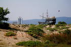
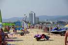
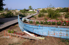
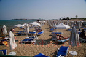
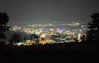

Sunny beach Beach Guide
About Sunny beach
Sunny beach is Bulgaria's largest and busiest beach resort. This destination features Wide sandy beach, numerous hotels, restaurants, water parks, nightlife, activities, making it ideal for families, party-goers, those wanting all-inclusive resort experience. The Bulgarian Black Sea coast offers 378 kilometers of diverse beaches, and Sunny beach provides its own unique character and attractions.
What to Expect
The beach area at Sunny beach features fine to medium sand typical of Black Sea beaches. During summer months (June-September), water temperatures range from 22-25°C (72-77°F), perfect for swimming. The area offers standard beach amenities including umbrella and sunbed rentals (typically 10-20 BGN per day), changing facilities, and food services. Peak season runs from mid-July through mid-August, when the beaches are busiest and prices highest.
Getting There & Practical Information
The nearest airports are Burgas (BOJ) and Varna (VAR), both serving international and domestic flights. Bus services connect major coastal towns during summer. Accommodation ranges from budget guesthouses (40-60 BGN/night) to mid-range hotels (80-150 BGN/night). Bulgaria uses the Bulgarian Lev (BGN), approximately 2 BGN = 1 EUR. English is commonly spoken in tourist areas.
Nearby Attractions
Beyond the beach, visitors can explore Nesebar old town, Action Aquapark, Pomorie Lake. The Bulgarian coast combines natural beauty with historical sites, traditional villages, and opportunities for hiking, water sports, and cultural experiences. Each location offers something unique while maintaining authentic Bulgarian coastal character.
Best Time to Visit
June and September offer excellent weather with fewer crowds and better prices compared to peak July-August. Water is warm enough for comfortable swimming from mid-June through mid-September. For the quietest experience and best value, consider late May or early October, though some facilities may have reduced hours.
Tips for Visitors
Bring high SPF sunscreen (30+) as the sun is strong. Many beach vendors prefer cash. Learning a few Bulgarian phrases is appreciated. Book accommodations in advance for July-August. Consider renting a car to explore multiple beaches. Try local restaurants for authentic Bulgarian cuisine and fresh Black Sea fish. Beach umbrellas and sunbeds are available but bringing your own gear saves money.
Photo Gallery
Browse our collection of photos from Sunny beach showing the beach, facilities, and atmosphere. These authentic images help you understand what to expect and plan your visit effectively.
Hotels at the beach
Another hotel on the beach
More hotels
Dunes- 
Ship
Bulgarian flag
Flora
Sands
Entertainment
Overcrowded- 
Beach
Tourists- 
Flowers in boat
Volleyball
Everything is paid- 
Sleep
The beach is more than overcrowded
Sunglasses
In progress
Water attraction
Hotel
Boat
Ladies in the water
Jets and girls
Yachts
Topless
Another view of the beach
Wave at Sunny beach- 
Alcohol tourism